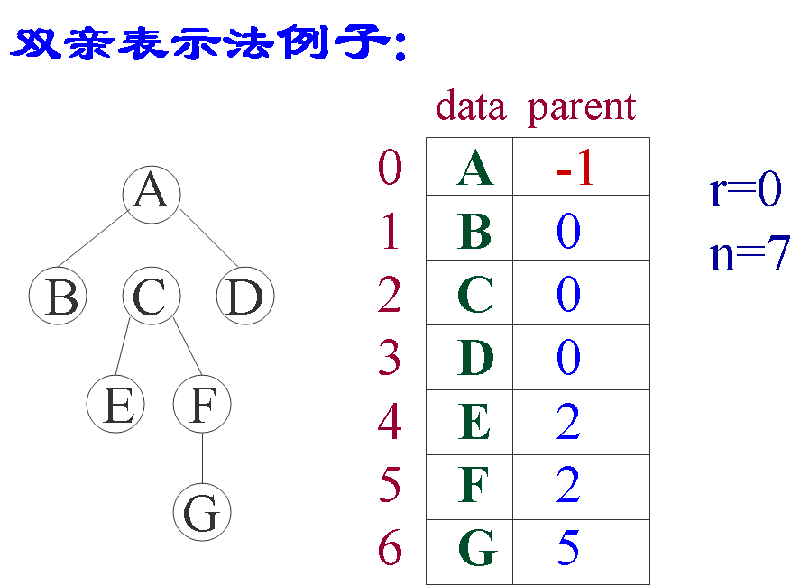
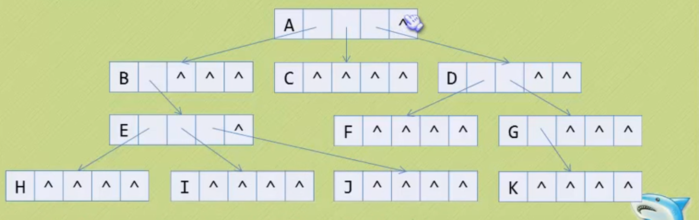
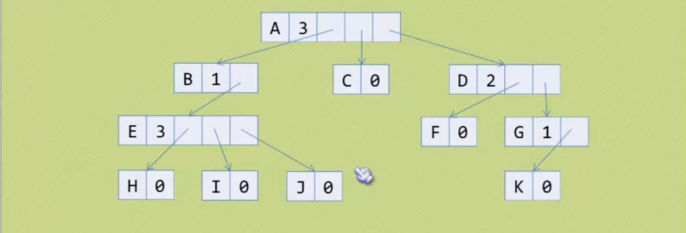
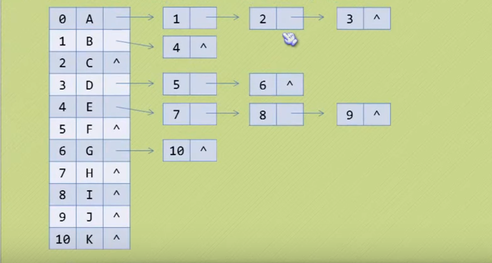
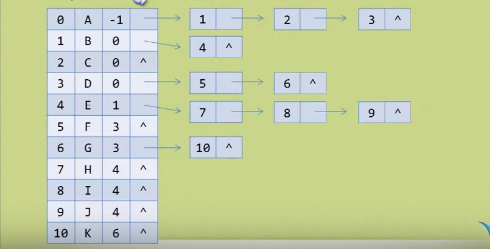
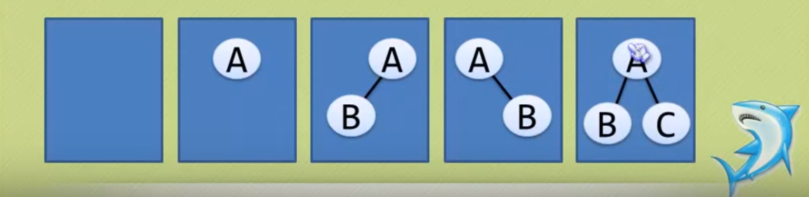

一、树
树的定义
树(Tree)是n(n>=0)个结点的有限集。当n=0时成为空树，在任意一颗非空树中：
- 有且仅有一个特定的称为根(Root)的结点;
- 当n>1时，其余节点可分为m(m>0)个互不相交的有限集T1、T2、。。。、Tm, 其中每一个集合本身又是一棵树，并且称为根的子树(SubTree)。
结点的分类
结点拥有的子树称为结点的度(Degree), 树的度取树内各结点的度的最大值。
- 度为0的结点称为叶结点(Leaf)或终端结点；
- 度不为0的点称为分支结点或非终端结点，除根结点外，分支结点也称为内部结点。
结点间的关系
- 结点的子树的根称为结点的孩子(Child), 相应的，该结点称为孩子的双亲(Parent), 同一双亲的孩子之间互称为兄弟(Sibling)。
- 结点的祖先是从根到该结点所经过分支上的所有结点。
结点的层次
- 结点的层次(Level)从根开始，根为第一层，根的孩子为第二层。
- 其双亲在同一层的结点互为堂兄弟。
- 树中结点最大层称为树的深度(Depth)或者高度。
有序树和森林
- 如果将树中结点的各个子树看成从左至右是有次序的，不能互换的，则称该树为有序树，否则称为无序树。
- 森林(Forest)是m(m>=0)棵互不相交的树的集合。对树中每个结点而言，其子树的集合即为森林。
树的存储结构
1.双亲表示法
双亲表示法，言外之意就是以双亲作为索引的关键词的一种存储方式。
我们假设以一组连续空间存储树的结点，同时在每个结点中，附设一个指示双亲结点在数组中位置的元素。
也就是说，每个结点除了知道自己是谁，还知道它的双亲在哪里。
那么我们可以做如下定义:
// 树的双亲表示法结构定义 #define MAX_TREE_SIZE 100 typedef int ElemType; typedef struct PTNode { ElemType data; // 结点数据 int parent; // 双亲位置 } PTNode; typedef struct{ PTNode nodes[MAX_TREE_SIZE]; int r; // 根的位置 int n; // 结点数目 } PTree;
这样的存储结构，我们可以根据某结点的parent指针找到它的双亲结点，所用的时间复杂度是O(1), 索引到parent的值为-1时，表示找到了树结点的根。
可是，如果我们要知道某结点的孩子是什么？那么不好意思，请遍历整个树结构。
改进一些也很简单，只需要在每个结点中添加孩子的索引
2.孩子表示法
方案一：根据树的度，声明足够空间存放子树的结点。缺点十分明显，就是造成了浪费！

方案二：根据每个结点的度申请空间存放子树结点。

方案三: 数组和链表结合

3.双亲孩子表示法
前两种方案结合

#define MAX_TREE_SIZE 100
// 孩子节点
typedef struct CTNode{
int child; // 孩子结点下标
struct CTNode *next; // 指向下一个孩子的指针
} *ChildPtr;
// 表头结构
typedef struct{
ElemType data; // 存放在树中的结点的数据
int parent; // 存放双亲的下标
ChildPtr firstchild; // 指向第一个孩子的指针
} CTBox;
// 树结构
typedef struct{
CTBox nodes[MAX_TREE_SIZE]; // 结点数组
int r; // 根的位置
int n; // 结点数目
}二、二叉树
二叉树的定义
- 二叉树是每个节点最多有两个子树的树结构。通常子树被称作“左子树”（left subtree）和“右子树”（right subtree）
- 左子树和右子树是有顺序的，次序不能颠倒。
- 即是树中某结点只有一颗子树，也要区分它是左子树还是右子树。
二叉树的五种基本形态
空二叉树
只有一个根结点
根结点只有左子树
根结点只有右子树
根节点即有左子树又有右子树

特殊二叉树
斜树
满二叉树
叶子只能出现在最下一层
非叶子结点的度都是2
在同样深度的二叉树中，满二叉树的结点个数一定是最多的，同时叶子也是最多的。

完全二叉树
若设二叉树的高度为h，除第 h 层外，其它各层 (1～h-1) 的结点数都达到最大个数，第h层有叶子结点，并且叶子结点都是从左到右依次排布，这就是完全二叉树。
- 叶子结点只能出现在最下两层
- 最下层的叶子一定集中在左部连续位置。
- 倒数第二层，若有叶子结点，一定都在右部连续位置。
- 如果结点度为1，则该结点只有左孩子
- 同样结点树的二叉树，完全二叉树的深度是最小的。

二叉树的性质
性质1: 在二叉树的第i层上至多有2^(i-1)个结点（i>0）
性质2: 深度为k的二叉树至多有2^k - 1个结点（k>0）
性质3: 对于任意一棵二叉树，如果其叶结点数为N0，而度数为2的结点总数为N2，则N0=N2+1;
性质4:具有n个结点的完全二叉树的深度必为 log2(n+1)
性质5:对完全二叉树，若从上至下、从左至右编号，则编号为i 的结点，其左孩子编号必为2i，其右孩子编号必为2i＋1；其双亲的编号必为i/2（i＝1 时为根,除外）